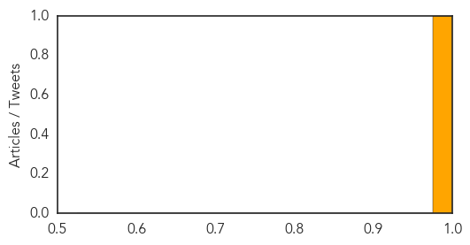

Ebola
30-Day Web Trend
0 alerts, 0 warnings

30-Day Twitter Trend
0 alerts, 0 warnings

Article Locations

Article Confidences

Top Articles:
- 0.999
- Battling the mystery of 'post-Ebola syndrome'
- 0.999
- West Africa Battles Mystery of 'Post-Ebola Syndrome'
- 0.999
- West Africa Battles Mystery of 'Post-Ebola Syndrome' — Naharnet
- 0.999
- West Africa battles mystery of 'post-Ebola syndrome'
- 0.999
- iafrica.com Post-Ebola syndrome surfaces
- 0.999
- West Africa battles mystery of ‘post-Ebola syndrome’
- 0.998
- Student evades monitors, spreads Ebola to Senegal
- 0.997
- West Africa battles mystery of ‘post-Ebola syndrome’
- 0.997
- Ebola drug cures monkeys infected with West African virus strain
- 0.997
- W. Africa battles mystery of post-Ebola illness
- 0.990
- UN resumes vaccination drive for three million children in West Africa
- 0.987
- Ebola outbreak: Will Canada avoid the mistakes of Dallas?
- 0.980
- Liberian-Americans in Arlington helping Ebola survivors in Africa
- 0.967
- Improved blood systems in Ebola-affected countries expected to be positive outcome
- 0.964
- WHO Regional Director for Africa Dr Matshidiso Moeti concludes her visit to Liberia - Liberia
- 0.960
- Sierra Leone: UN Mission for Ebola Emergency Response (UNMEER) External Situation Report, 24 April 2015
- 0.949
- Liberia: WHO Regional Director for Africa Dr Matshidiso Moeti concludes her visit to Liberia
- 0.943
- WHO promises support to rebuilding a resilient healthcare system in Liberia --China Economic Net
- 0.933
- Genetically modified cows
- 0.919
- San Angelo Standard Times
- 0.919
- Ebola victim’s fiancee hopes book closes chapter
- 0.918
- Fiancee of Ebola victim hopes memoir closes chapter
- 0.917
- UN Mission for Ebola Emergency Response (UNMEER) External Situation Report, 24 April 2015 - Sierra Leone
- 0.896
- IMANI: Ebola, health care investment and a plan for a West African Prosperity Network
- 0.877
- Teenage Ebola orphan tells how she survived the disease only to be abused and left pregnant
- 0.859
- Guest opinion: Backlash against doctors, aid workers a disturbing trend
- 0.854
- Faith leaders and the fight against Ebola - Sierra Leone
- 0.814
- Masks Made Of Cloth May Actually Cause More Harm Than Good
- 0.727
- Millions of people die annually of malaria, says Jeff-Nnamani
- 0.549
- Cloth masks -- dangerous to your health?
Top Tweets:
- 0.951
- West Africa battles mystery of 'post-Ebola syndrome' - GMA News http://t.co/3VmeW09vGX ebola EVD
- 0.930
- UN Chief Names New Head of Ebola Mission as Outbreak Calms - ABC News http://t.co/v70xxlR18c ebola EVD
- 0.730
- Teenage Ebola orphan tells how she survived the disease only to be abused ... - http://t.co/XArxynrjpt http://t.co/ao5IjTAUTo ebola EVD
- 0.729
- Food insecurity is a hidden cost of the Ebola epidemic. @FAOnews estimates 120K Sierra Leoneans are food insecure http://t.co/ADh3mOHXER
MERS
30-Day Web Trend
0 alerts, 0 warnings

30-Day Twitter Trend
0 alerts, 0 warnings

Article Locations

Article Confidences
Top Articles:
Top Tweets:
-
No tweets found for Apr 25, 2015